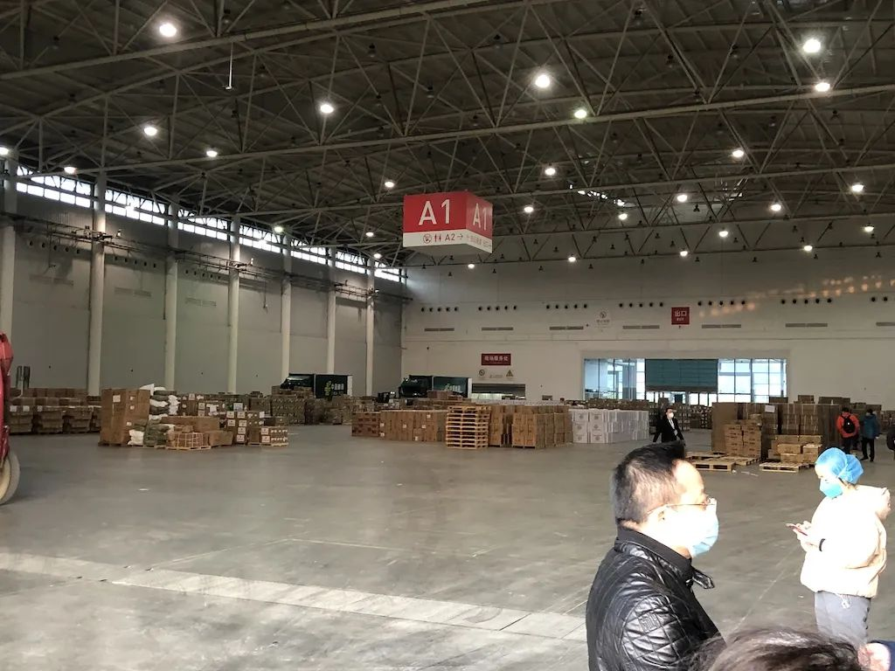

拯救武汉：实录封城后最艰难的三周 |《财经》封面
原文链接 备份链接 一座人口过千万的超级大都市在突降灾疫后陷入休克，然后艰难走出混乱无望 财经封面。创意设计/黎立 文 |《财经》特派武汉记者 刘以秦 信娜 王小《财经》记者 房宫一柳 黎诗韵 俞琴 王丽娜 王静仪 陈亮 李斯洋 李皙寅 …
24.02.2020

本文字数：3380，阅读时长大约6分钟
导读：全国各地驰援力量也投入到了帮助武汉爬坡跨坎的大战之中。
作者 | 第一财经 吴绵强
2月20日晚上，在武汉江夏区方舱医院隔离的每一位患者都收到了一颗“星星”，上面有手写的祝福语：“叔叔阿姨晚上好，这是我自己做的许愿星，祝愿你们早日康复！”
以上是央视新闻中的一个镜头。亲手为这些患者送上“星星”的，是在此值晚班的南京市中西医结合医院护士王慧敏。这位可爱的小姑娘希望，自己亲手折叠的这些许愿星能够让患者在隔离的初春之夜也能“仰望星空”。
若将时间回调一个月，可能很少会有人将收治于方舱医院的患者、驰援而来的医护人员以及静美的“星空”联系在一起。
1月20日，是新冠肺炎防控的重要转折点，特别是随着1月23日武汉宣布封城，各地的防控措施空前提升，但面临的难关和压力也随之出现。
封城之下，武汉必须跨过应收尽收、物资紧缺、医护感染等几道现实难关。全国各地的驰援力量也投入到了帮助武汉爬坡跨坎的大战之中。

纾解“堰塞湖”
1月下旬之后，武汉市各区的发热人员持续上升，中心城区的各大医院人满为患。
1月23日，第一财经记者前往武汉市红十字医院采访发现，医院等待检测体温、拍片诊断的人员排起长队，医护人员身穿防护服给患者监测体温，导诊台的护士忙碌地为前来咨询的患者答疑解惑。由于等不到床位，有的患者就睡在医院大厅的长条凳上。
武汉随之出台了相关政策，试图解决医院人满为患的问题。
1月24日，武汉市疫情防控指挥部发布第7号公告称，为解决发热门诊等候时间长、床位安排不及时等问题，全面实行发热市民分级分类就医制度。
彼时，武汉市要求全员排查发热病人，而这项排查重任就落在了基层社区头上，“由全市各社区负责，全面排查所服务辖区发热病人（含已就医和未就医市民），并送社区医疗中心对病情进行筛选、分类。”
据7号公告，“对于不需要到发热门诊就诊的病人，由各社区落实在家居家观察，社区负责做好市民居家观察服务工作。”
由此一来，许多新冠肺炎确诊病例以及疑似病例患者必须回到各自所在的社区，他们只能待在家里居家隔离治疗，并等待社区逐级上报并安排床位等待救治。
这使得人手紧缺的基层社区压力倍增，更为主要的是，居家隔离实际上也成为了扩大感染的一大隐患。
据第一财经记者了解，受制于车辆运力以及基层社区医疗服务中心的救治能力，许多社区内持续增加的确诊、疑似患者一时间难以安排及时就医就诊，最终导致社区内患者形成就诊“堰塞湖”。
1月25日，武汉市新冠肺炎疫情防控指挥部举行调度会，决定在武汉市江夏区黄家湖建设雷神山医院，将新增床位1600张左右。随后又投建雷神山医院。
虽然火神山、雷神山医院陆续开建，武汉本地原有医疗资源也极力挖潜，但依然远远满足不了求医需要。此时的武汉，医疗资源已经远超负荷极限，不少患者痛苦煎熬。
“我们很揪心、很痛苦的是，已经确诊的和很多疑似的病人没有住进指定医院救治，无法及时到达医院得到很好救治，形成了救治的‘堰塞湖’。”2月5日晚间，在新闻发布会上，武汉市人大常委会主任、市委副书记胡立山回顾并承认了当地收治“堰塞湖”存在的事实。
在中央赴湖北指导组的推动下，紧急抽调的20个省市大型三级综合医院的医学救援队赶赴武汉，武汉市的会展中心、体育场馆等场馆也被改造成方舱医院，集中收治确诊轻症病人。
2月2日，火神山医院正式交付使用。当晚，武汉市又紧急征用17家医疗机构作为第四批定点医院，专门收治从之前三批定点医院转出的首次检测结果为阴性的疑似病例。然而，即使如此，依然难以满足临床救治的床位需求。
2月8日，雷神山医院交付，又进一步缓解了“人等床”的局面。
随着定点医院的不断新增，以及拉网式大排查的展开，许多确诊新冠肺炎患者以及疑似患者得到有效收治的覆盖面进一步扩大。
2月21日下午，据武汉市常务副市长胡亚波介绍，武汉目前已经有13家方舱医院开舱，可提供救治的床位达到了13348张，已使用9313张，前期存在的患者收治难问题已经得到有效解决。他同时表示，将准备进一步加强方舱医院的扩容，计划再建19家，也就是到2月25日，全市储备的方舱医院床位达到3万张。
“裸奔”的医护人员
在举全国之力救治武汉乃至湖北的这场战役中，防护物资紧缺的问题在很长时间都受到极大关注。
1月下旬开始，网上即频频传出各种有关防护物资紧缺的求助信息，其中有不少来自医护人员和医疗机构。
协和医院、同济医院等均通过互联网对外发布求助信息称：急需防护服、医用N95口罩、医用外科口罩、一次性隔离衣和防护面罩等，“这些仅为参考，实际上是越多越好。”一些求助信息显示，有的医院由于防护物资紧缺，医护人员不得不重复使用口罩、防护服等，甚至有一些医护人员不得不自己改制防护装备。
第一财经调查发现，随着疫情的扩大，各大医院的N95口罩、医用防护服和护目镜等防护物资很快消耗殆尽，出现高度紧缺的局面。最开始，防护物资都是优先给收治新冠肺炎患者的科室使用，而一些普通科室患者则无法得到充分配置。
1月30日下午，接受第一财经记者采访的协和医院某科室护士就确认，他们医院的防护物资已经非常紧缺。同时，普通病房医护人员面临被感染新型肺炎的危险，而由于物资紧缺，这些普通科室医护人员在防护物资的配发上只能排到后面。
事实上，前期一些医院也收到了社会爱心人士的捐赠，但是有些爱心人士对防护物资的医用质量标准并不清楚，造成一些捐助物资无法迅速发挥效用。
与此同时，社会上对于物资分配的质疑声四起：一方面临床急需的防护物资紧缺，另一方面主管物资捐赠的武汉红十字会却未能及时把仓库内堆积如山的物资及时送到临床救治一线。武汉红会方面的解释是，他们只管发放，无权进行具体的分配。

▲武汉红十字会仓库一角
面对质疑，2月1日晚间，武汉新冠肺炎防控指挥部指派湖北九州通医药集团，负责红十字会仓库医疗防护物资的分发。
1月30日晚，湖北副省长曹广晶回应了医疗物资的分配问题，称将全力以赴组织省内的企业复工、复产，相关企业24小时不停产。
截止到2月21号，中央各部委和各省市向湖北调拨防护服、隔离衣共计193万件，N95口罩295万只。2月20日，中央各部委、各省调拨支援的高端ICU防护服达到6.4万件，非ICU医用防护服4.9万件，N95口罩达到10万只。
在2月20日下午的国新办发布会上，中央指导组成员、国家发展改革委员会副主任连维良表示，目前湖北武汉医用物资短缺状况有了很大改善，尽管仍然是紧平衡，对一线医护人员和高危人员所需的防护物资是可以保障的。为强化医用物资保障，下一步还将做到增加数量、保障质量、应保尽保、特事特办。
超1700医护人员感染
但最令人痛心的事情还是发生了。
2月6日晚，北京协和医院多名医生对第一财经记者确认，武汉中心医院的眼科医生李文亮因感染新冠肺炎去世。
事实上，李文亮并非第一位感染的医护人员。早在1月20日，钟南山院士在接受央视记者采访时，就披露了有14名医务人员感染新冠肺炎的信息。
令人痛心的是，武汉市有不少医护人员出现感染，并最终没能熬过这个春天。
2月18日，又一个悲伤的消息出现在不少人的微信朋友圈——武汉市武昌医院院长刘智明，因感染新冠肺炎，经全力抢救无效，于2月18日10时54分去世，年仅51岁；
2月20日，武汉市江夏区第一人民医院/协和江南医院呼吸与危重症医学科医生彭银华，在抗击疫情一线不幸感染新冠肺炎，因病情恶化抢救无效去世；
2月23日上午，协和江北医院（武汉市蔡甸区人民医院）发布公告称，29岁的消化内科女医生夏思思，在抗击疫情一线不幸感染新冠肺炎，经抢救无效，于23日凌晨殉职；
……
据新华社报道，截至2月11日24时，全国共报告医务人员确诊病例1716例，其中6人不幸殉职。其中武汉市报告了1102例医务人员确诊病例。
即便如此，来自全国各地的医疗队伍仍旧毅然决然与家人告别，奔赴一线，驰援湖北。截至2月20日，根据中央部署，全国29个省区市、新疆生产建设兵团和军队系统已派出3万余名医务人员驰援湖北（武汉）。
2月19日，习近平主席就关心爱护参与疫情防控工作的医务人员专门作出重要指示，强调医务人员是战胜疫情的中坚力量，务必高度重视对他们的保护、关心、爱护，从各个方面提供支持保障，使他们始终保持强大战斗力、昂扬斗志、旺盛精力，持续健康投入战胜疫情斗争。此后，各地陆续出台政策，关心关爱防控一线医务人员及其家属。
2月22日，湖北省委书记应勇在与医院院长座谈时强调，“要精心组织医疗资源，全力以赴救治受感染的医务人员；要强化医院感染防控，全力保障防护物资；要统筹安排好医务人员轮休，加强心理疏导、人文关怀；要不断完善对支援湖北医疗队的‘一对一’服务机制，做好全方位保障。”

【相关阅读】


原文链接 备份链接 一座人口过千万的超级大都市在突降灾疫后陷入休克，然后艰难走出混乱无望 财经封面。创意设计/黎立 文 |《财经》特派武汉记者 刘以秦 信娜 王小《财经》记者 房宫一柳 黎诗韵 俞琴 王丽娜 王静仪 陈亮 李斯洋 李皙寅 …
原文链接 备份链接 “很多人去世。”袁鸣说，“但他们和我们都尽了最大的努力。” 2月15日上午，刚刚经历了一夜冬日雷雨和大风的武汉大雪纷飞，袁鸣早早进入病房查房。依次穿上蓝色隔离服、白色防护服，戴上手术帽、面屏和护目镜，套上手套和脚 …
原文链接 备份链接 我就想站在这里，站在第一线，没有为什么。我觉得，我还可以，我能扛住压力，尽快尽多的救治更多的人、更多的小人物。 2月18日上午10:30左右，武汉武昌医院院长、神经外科专家刘智明因新冠肺炎抢救无效，在同济医院中法新城院 …
原文链接 备份链接 对病毒的未知、医疗物资缺乏，又因高强度的工作压力影响到免疫力，导致医护感染达到高峰。随着医护人员防护意识、对病毒认识的增强，相关防护措施到位，后期被感染的医护人员应该越来越少 ****文 | 《财经》 …
原文链接 备份链接 澎湃新闻记者 何利权 实习生 粟满莺 李佳悦 因缺乏物资，都安县医护人员自制防护用品。 因新冠肺炎确诊患者在短期内陡增，且感染人数占到所在市（州）的绝大部分，个别位置偏僻的贫困县正面临着一场艰难的“战疫”。 截至2 …